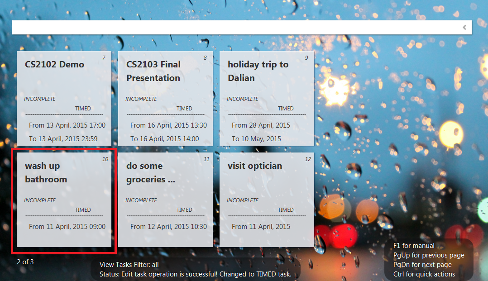
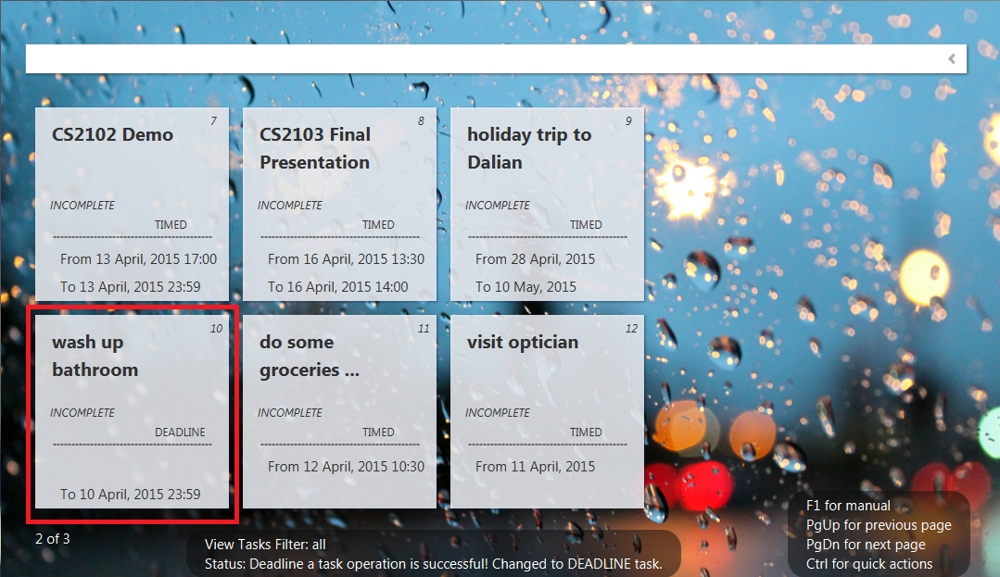

Keyword: by
Commands available:
Command |
Example |
Remarks |
deadline {task number} {by} {date} |
deadline1 by 2015-04-18 |
all except deadline tasks |
deadline {task number} {by} {monday-sunday/today/tomorrow} |
deadline 1 by monday |
all except deadline tasks |
deadline {task number} {by} {date} {time} |
deadline 1 by 2015-04-18 19:00 |
all except deadline tasks |
deadline {task number} {by} {mon-sun/today/tomorrow} {time} |
deadline 1 by monday 19:00 |
all except deadline tasks |
Note:
Default deadline time is 23:59
Converting to deadline task command can execute while filtering tasks/searching for tasks.
When the task is converted to deadline task successfully, the program will stay on the page where the task was converted. In this scenario, task 'wash up bathroom' was to be converted to a deadline task.


Created with the Personal Edition of HelpNDoc: Easily create PDF Help documents